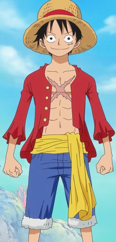

Monkey D. Luffy, also known as "Straw Hat Luffy" and commonly as "Straw Hat", is the main protagonist of the manga and anime, One Piece. He is the founder and captain of the increasingly infamous and powerful Straw Hat Pirates, as well as one of its top fighters. His lifelong dream is to become the Pirate King by finding the legendary treasure left behind by the late Gol D. Roger. He believes that being Pirate King means having the most freedom in the world.